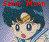

titul epizody
Chimmoku no Messiah Kakusei? Ummei no Hoshiboshi
[Mesiáš Ticha? Osud ve hvězdách]
datum vysílání 24. 12. 1994
Hosté
Thomas (Horikawa Ryo)
U Chouten (Ohtani Ikue)
Děvče (Toyoshima Machiko)
Souhrn, Graig Olson, 18. 07. 1999
Rei má znovu vidění o tichu a zničení. Tentokrát navíc vidí postavu ženy na vrcholu sloupu, držící hůl. Objevuje se taroková karta Smrti a ta postava skáče. Přitom je vidět že z hůl je zbraň. Rei procitá. Usagi se obrací na Ami s otázkou. Rei přemýšlí, kdo ta postava asi je. Zdá se jí, že vypadá jako někdo, koho zná.
[úvodní klip]
Chibi Usa jde dovnitř a ptá se, zda je tam Usagi. Usagi křičí a volá, že nepředpokládala, že bude tady. Chibi Usa říká, že opravdu něco potřebuje od své velké sestry, a tím šokuje Usagi. Chibi Usa chce jít do nového planetária.
Minako vidí na plakátu, že vypravěč bude slavný DJ (dý-džej – diskjockey). Usagi říká Chibi Use, že do planetária půjdou zítra. Rei si pamatuje svou vizi. Zdá se jí, že onu postavu poznává, ale myslí si, že to není možné. Chibi Usa vyskakuje a říká, že bude lepší když někdo za ni zaplatí vstup. Usagi míní, že ona to nebude. Minako ale namítá, že to je plně v zodpovědnosti matky. Chibi Usa přichází až k Usagi, objímá ji a prosí. Rei sedí tiše, stále přemýšlí o své vidině.
Ve městě, Haruka, Michiru a Setsuna se baví o stejné vidině. Michiru říká, že vidí ženu s dlouhou holí, "Silence Glaive" (zmražené ticho). Vědí, že to může znamenat pouze jedno, Mesiáš Ticha přichází z planety zkázy. Už tuší, že musí najít Sailor Zkázy a zničit ji.
Mesiáš Ticha mluví o tom, že Ticho už přichází. Profesor potvrzuje, že vše co Mesiáš Ticha udělá, bude dokonalé. Mesiáš říká, že veškerý úspěch závisí nyní pouze na ní. Pokud chtějí uspět dříve, musí dostat více čistých srdcí. Zvedá plyšového medvěda, roztrhne jej a hodí po profesorovi.
V kanceláři Čtyř Čarodějnic, sleduje Mimete Odpočítávání 50 s DJ z planetária, a tuší, že DJ bude následující cíl. Telefon zvoní, je to profesor. Ptá se jak se mu líbí hvězdy. On od poví že ano. Mimete říká, že je to dobře, protože se pod hvězdami cítí šťastná. Profesor jí přeje štěstí a pamatuje si přísloví: "Hvězdy vědí všechno." (zlomek fráze Neflite) Začíná se hystericky smát.
Hotaru jde domů ze školy. Děvče za ní křičí Tomoni. Hotaru se zdá, že volají na ní. Otočí se ale dívka okolo ní pouze proběhne. Když se otočí zpět vidí Chibi Usu. Ta se jí ptá, zda chce jít do planetária s ní. Hotaru má starost, co tomu řekne otec. Chibi Usa říká, že se planetárium otevře bez ní, pokud nepůjde. Usagi přichází, a říká, že to bude v pořádku, pokud přijde o něco déle. Chibi Usa se nabízí, že promluví s jejím otcem, pokud by něco bylo špatně.
V planetáriu, DJ, Harris Thomas, vyspravuje příběh princezny Andromeda. Mimete je jím unesená. Michiriu spatří Mimete a říká, že Thomas bude pravděpodobně další cíl. Potom se diví proč jsou tu dívky s Hotaru. Haruka to vítá, bude to pravděpodobně nejlepší příležitost zjistit, kdo Hotaru doopravdy je.
[reklama]
Všichni sledují pořad. V tom Usagi spatří Setsunu. Ona přikyvuje, mají za ní přijít. Setsuna říká, že nemůže nic vysvětlovat, pokud nebudou znát celou pravdu. Nepřátelé jsou "Death Busters". Oni chtějí aby přišlo Ticho. Ami se ptá co to Ticho je a Setsuna odpovídá - konec světa. Ptá se Rei, zda něco viděla. Rei ví o čem mluví a vypráví své vidění. Setsuna před ně nastavuje rubínovou kouli své hole. Říká, že v ohnisku uvidí stejný sen co měla Rei. Všechny to vidí a říkají, že se to nesmí stát. Setsuna pokračuje, že pokud nezničí Mesiáše Ticha, vidění se vyplní.
Najednou se ozvou ze sálu výkřiky. Objevil se opravdu rozzlobený démon – U Chouten. Ta volá, aby si každý přál hvězdu a začíná je vrhat kolem.Thomas volá, aby všichni utekli. U Chouten jde po něm. Mimete je spokojená s jeho prací. U Chouten ví, že je velká a neporazitelná. Mimete přikazuje aby se přestala věnovat publiku a dostala krystal srdce. Mimete žádá Thomase o autogram a on po ní hází židli.
Mimete vytváří Buster (který je má kouzlem zbavit publika) Hotaru začíná být malátná. Chibi Usa chce vyrazit pro pomoc ale zastaví ji Sailor Uran. Sailor tým přichází a uvádí se. Vnější Senshi čekají vzadu u vchodu. Mimete volá na U Chouten, aby šla po Sailor a získala i jejich čistá srdce. U Chouten začíná útočit vrháním hvězd. Zatím se všichni uhýbají. V čele démona se objeví rudá růže. Tuxedo Kamen přichází. Hotaru vstává, aby mohla dýchat. Je zasažena vrženou hvězdou. Na čele se jí objevuje znamení Saturna, všechny Sailor ví co se stalo. Hotaru zmrazí U Chouten nadpřirozeným pohledem. Sailor Moon se transformuje na Super Sailor a zničí démona.
"Zemětřesení!" "Příval vod!" "Mrtvý výkřik!" Vnější Senshi útočí na Hotaru. Chibi Usa se postaví před ni. Sailor Moon je obě strhne v posledním okamžiku. Uran je rozčílená, Hotaru je Sailor Saturn, když se objeví, nastane konec světa. Sailor Moon říká, že pro to ji nemohou zabít. Sailor Pluto vysvětluje, že nemají jinou možnost jak zachránit svět. Hotaru se rozplývá ve vzduchu a zhmotňuje se doma ve své posteli. Kaoli se na to dívá. Říká, že není dobře, když se odchyluje od svého poslání.
Profesor mluví s někým kdo se jmenuje Pharoh 90. On už ví, že Hotaru je Sailor Saturn, předvoj zkázy. Říká, že málokdo by mohl být lepším Mesiášem Ticha. Na jeho stole je koule s malým vesmírem. Uprostřed je Galaxie - Pharoh 90.

Sailor Moon page Hitoshi Doi site explorer(c) Takeuchi Naoko, Koudansha, TV Asahi, Toei Douga